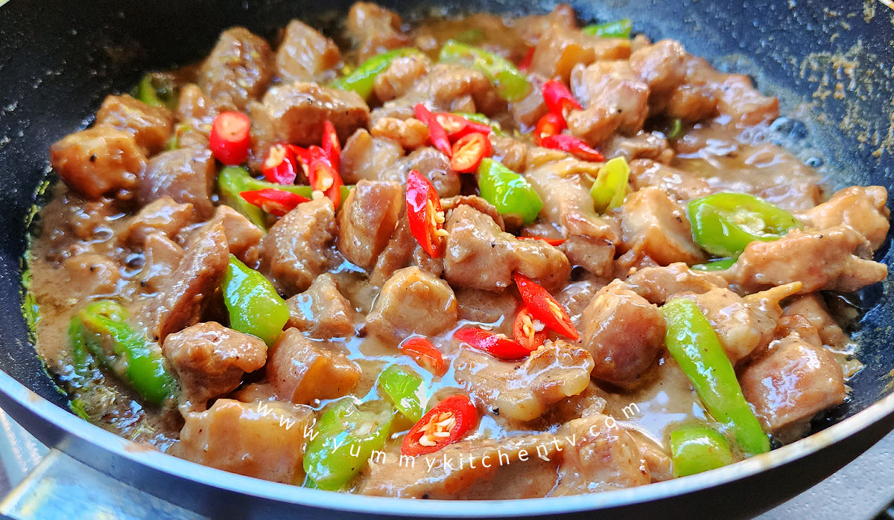

ABOUT THE FOOD TOUR
The Bicol Express Food Tour is a sensory celebration of the region's unique culinary identity. Centered around the iconic Bicol Express, this tour takes you through local eateries and fine dining spots to experience authentic flavors that define the Bicolano lifestyle.
A LEGACY OF SPICE
Bicolano cuisine is famously characterized by the heavy use of 'gata' (coconut milk) and 'sili' (chili). The "Bicol Express" dish itself was named after the passenger train from Manila to Legazpi, reflecting how the local love for spicy food has traveled and become a beloved national treasure.
FACTS
Key culinary details.
- Core Flavor: Spicy & Creamy
- Key Ingredients: Gata & Silis
- Must-Try: Pinangat & Bicol Express
- Dessert: Sili Ice Cream
TRAVEL TIPS
Prepare your palate for the heat.
- 🌶️ Heat Level: Start with 'mild' if you aren't used to spice.
- 🥛 Relief: Milk-based drinks help soothe the spice better than water.
- 🥡 Portions: Try 'tasting platters' to sample more dishes.
- 🥢 Street Food: Don't miss out on local market vendors!
THINGS TO DO
Enjoy the full Bicolano feast.
For a truly local experience, ask for "Sili Ice Cream"—it's the perfect sweet and spicy finish!